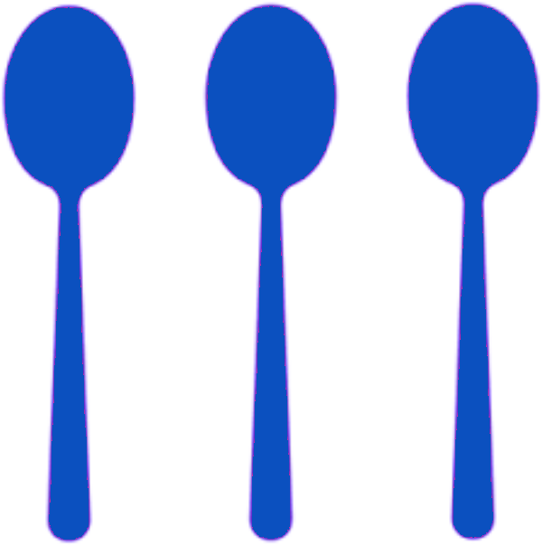
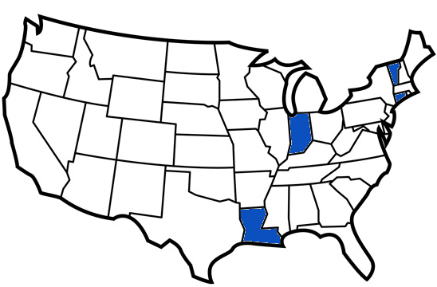

In brief...
Currently at Yale, working on a PhD. Email me any time, or find me on linked in. Here is my curriculum vitae.
compulsive optimizer (I can make 2 weeks worth of breakfast in 6 min. 26 sec.)
self starter (You have to be to survive a PhD.)
frugal minimalist (There are three spoons in my household of two people.)
non-conformer (I'm not on facebook. Me and that one other guy are going to start our own club.)
I have one Lovely Husband, one Terrible Dog, and three aforementioned Spoons.
Trajectory...
Born and raised in St. Johnsbury Vermont.
Went to undergrad in Louisiana to escape the cold.
Followed my husband to Indiana and learned to be a teacher.
Discovered that doing physics is much more fun than teaching physics.
Moved to Connecticut to get a PhD in applied physics. Also, cold again.
I want to continue solving quantitative problems after finishing my PhD.
Quantitative skills...
If you want to solve quantitative problems in the real world you have to be good at math, you have to be good at computers, and you have to be good at critical thinking. I practice most of these skills every day so that I can be a better problem solver.
My academic coursework in physics and math gives me a solid mathematical foundation. I learned programming skills through self-study and through my physics research, which often requires data analysis and simulation. And many years of immersion in science has trained me to think carefully and logically. The table below shows a summary of the fields of my math and science coursework as well as tech tools or languages I use. You can find more on my skills page.
| math | physics | code & markup |
|---|---|---|
|
|
|
Resources and Tools...
Sometimes I make things that might be useful for other people, like a write up about an idea, or an online tool. I didn't want to jump on the blog bandwagon though, so this is where I will collect the things I think may have value to others. You can find some possibly useful code on my skills page.
Python Cliffnotes - codecademy.com Track
Codecademy.com has an online course which is a 13 hour introduction to the Python programming language. This pdf is my Cliffnotes for that course, and includes some extra material on certain topics where the codecademy treatment was shallow. I used the pythontex package for Latex to include python listings and their output.
C++ Cliffnotes - Sam's Teach Yourself C++
I used a good chunk of the book Sam's Teach Yourself C++ in One Hour a Day to learn the underpinnings of C++ in order to code our instrument control and data acquisition system for my PhD research. I collected my notes on the lesson from the book into a pdf. I used the minted package for Latex to do syntx highlighting of C++ snippets.
Collected Riddles (in the Dark)
I'm kind of a nerd and I collect riddles I find interesting as I stumble across them. I keep them together with their solutions in a google doc. Most of them tend to be math-y, some are more word play.